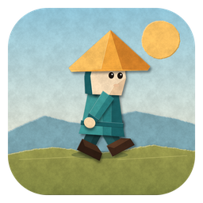
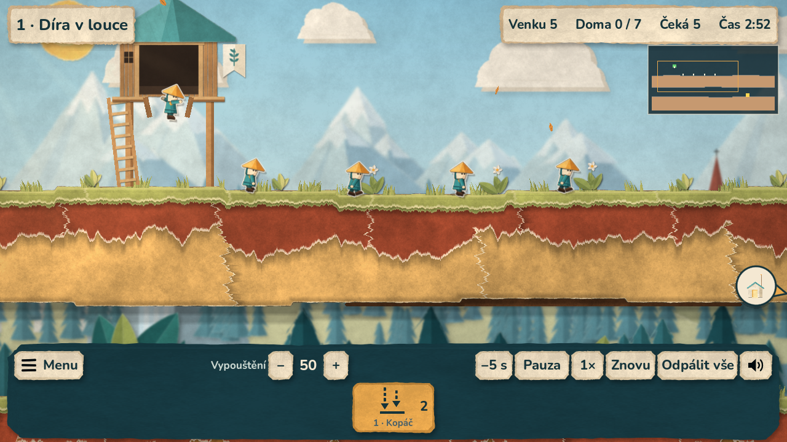

Windows
Windows 10 / 11 · 64 bit
Stáhnout pro Windows ZIP · 65,4 MBRozbal ZIP a spusť Paperlings.exe. Ovládání myší a klávesnicí. Sestavení není digitálně podepsané; Windows může při prvním spuštění zobrazit upozornění.

Malé papírové postavičky, velká cesta domů. Kopej tunely, stavěj schody a proveď celý zástup nástrahami ve 24 misích.

Windows 10 / 11 · 64 bit
Stáhnout pro Windows ZIP · 65,4 MBRozbal ZIP a spusť Paperlings.exe. Ovládání myší a klávesnicí. Sestavení není digitálně podepsané; Windows může při prvním spuštění zobrazit upozornění.
Android 7.0 a novější · telefon i tablet
Stáhnout pro Android APK · 80,5 MBOtevři stažené APK a na výzvu povol instalaci. Tato verze se instaluje jako nová aplikace vedle staré testovací hry. Začneš od první mise, bez starého postupu; nový postup se při hraní normálně ukládá.
Vyber dovednost a přiděl ji postavičce. Ostatní půjdou v jejích stopách. Když se plán zamotá, zpomal čas, udělej pauzu nebo se vrať o pět sekund. Hra je česky a funguje offline.
Hudba je v obou verzích. Po jednotlivých misích se střídají čtyři skladby. Hlasitost si nastavíš v Nastavení → Zvuk → Hudba.
Jde o předběžné vydání. Balíčky a společné herní soubory prošly kontrolami v cloudu; tuto verzi ještě zbývá vyzkoušet přímo na Windows a Androidu.
Kontrolní součty souborů